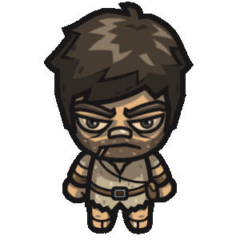
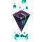
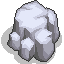
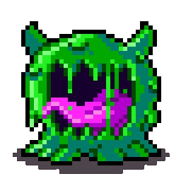
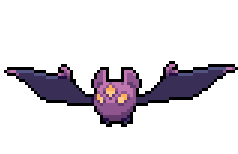
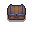
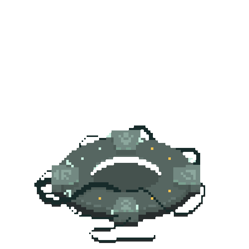

Use the arrow keys or WASD keys to move your character.

Press the SPACE key to interact with nearby objects and trigger the exit.

Obstacles block your movement. Find another way around them to reach your destination!

Avoid monsters or they will hurt you!


Watch your step! Traps can hurt you when you walk over them.
Explore the map and collect treasures along the way!

Use portals to travel across the map and reach otherwise inaccessible areas.
